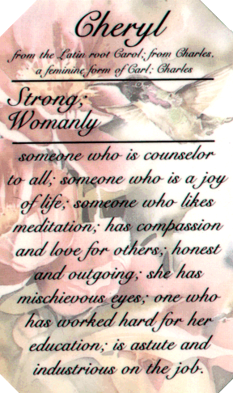

I
guess if you've come this far then you'd like to know a
bit
about me. Well here goes. LOL

I'm
Cheryl or Chezs as my husband called me when we
first
met back in 1970, and married on 2nd October,1971.
As
you saw in the pic on the family page we were
blessed
with 4 wonderful sons, who have grown quite a
bit
since that pic was taken. Neil is now 27, Bradley is 24,
Rodney
is 22 and Adam that gorgeous little baby is now 17.
How
time flies. LOL.
It
was Adam who got me started on the net late '99
despite
the other boys trying before then. He not only taught
me
the basics of the computer and ICQ but also how to put a page together.
Thank you Adam. A big thanks too to Steve, my husband for letting me stay
on here for as long
as
I want. He says I don't nag him as much now.. LOL.
I
have also been blessed to meet some wonderful friends on
here,
who help me when I really need it. I have needed
it
quite a bit lately, and my friends have always been here
to
pull me through. I believe there is a reason for
everything
that happens in our life. Sometimes it's hard
to
accept what is happening, but when God sends you
special
angels to be friends, it makes it so much easier
to
cope. I hope and pray that I can be as good a friend
to
them as they are to me.
I
could tell you my hobbies, but since I got on here
everything
else has taken a back seat. LOL.
I
used to play quite a lot of sport, until health problems
stopped
me. I was at a lose, didn't know what to do
with
my spare time. I started doing crosswords and puzzles
and
that helped fill in the time. Now I spend as much time asI can on the net.
I have learnt so much, and I know
there
is still so much more to learn. I love visiting other homes on the net
and meeting the people there.
We
all have our cross to bear. With me it's Chronic Pain,
but
having the love and support of my family and wonderful
friends
to help me through the really bad times helps me
cope
with it.

This
beautiful name plaque was sent to me by
snail
mail from my net adopted daughter and her
2
wonderful kids, for my birthday. Along with this,
she
has also sent me the lovely dolphin cards that I've
used
as backgrounds on some of my pages. Thank you
so
much Missy, Justin and Tracie for letting me be
part
of your life. I love you all. Big hugs..
Please
don't forget to sign my guestbook before you leave.
Background
and graphics used here were made by ME.
Page
updated 9/12/00